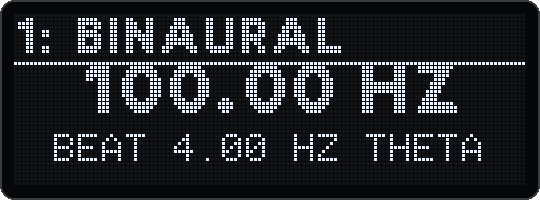

Der Drone spielt bis zu 16 Dauertöne unter der Musik deines Songs. Jeder Ton kann ruhig sein oder eine Schwebung tragen: binaural, monaural oder isochron, frei in Hertz oder im Tempo, auch in Triolen. Die Tonhöhe stellst du in Hertz ein oder als Note, die dem Master Tune folgt. Isochrone Pulse haben Attack und Release. Der Drone duckt sich unter die Sidechain des Songs, kann ins Song-Reverb senden und wird mit dem Song gespeichert. Mit Drone-Spuren leben seine Töne auch in Kits, so dass Clips und Arranger sie schalten und automatisieren können.
| Version | Was der Drone bekam |
|---|---|
| v12 | Den Drone: bis zu 16 Töne, binaurale, monaurale und isochrone Schwebungen, Tempo-Sync, Sidechain, eine eigene Ansicht |
| v13 | Select stellt die Tonhöhe in Rasten ein; die Pads leuchten ruhig; Attack und Release für isochrone Pulse; Triolen; Goldknöpfe nach Mod-Sektion; Reverb-Send |
| v15 | Life (langsames Driften), FM und die Klangfarbe Pulse |
| v16 | Drone-Spuren: Drone-Töne als Kit-Reihen in Song- und Arranger-Ansicht, eine Hz-Spur pro Reihe (Abschnitt 9.16) |
| v17 | Korrektur: In v13–v16 konnte der Deluge etwa 15 ms nach dem Öffnen der Drone-Ansicht hängen. Nimm v17 oder neuer. |
Alternativ öffnest du die Drone-Ansicht im Song-View über SELECT drücken (Song-Menü) → Drone. Im Arranger gibt es diesen Menüpunkt nicht, weil der Rückweg immer in den Song-View führt.
Die Ansicht ist gebaut wie der Song-View: eine Reihe pro Ton statt eines Clips, Ton 1 unten. Acht Töne sind gleichzeitig sichtbar. Mit dem Y-Encoder (vertikal) scrollst du zu den Tönen 9–16.
| Element | Wirkung |
|---|---|
| Pad im Raster | Pegel des Tons dieser Reihe setzen und Ton wählen |
| Mute-Pad | Ton an/aus, Ton wählen |
| Audition-Pad | Ton wählen |
| Y-Encoder drehen | scrollen: Töne 1–8 bis 9–16 |
| X-Encoder drehen | Pegel des gewählten Tons in 1-er-Schritten (0–50) |
| SHIFT + X-Encoder | Pan des gewählten Tons (−32 links bis +32 rechts) |
| Select drehen | Tonhöhe des gewählten Tons in spürbaren Rasten: in Hz 1 Hz pro Klick, mit SHIFT 0,1 Hz; als Note ein Halbton, mit SHIFT ein Cent |
| SYNTH / KIT / MIDI / CV | Modus des gewählten Tons: Ton / Binaural / Monaural / Isochron. Die LED der Taste zeigt den aktuellen Modus. |
| Select drücken | Menü des gewählten Tons und des ganzen Drones öffnen (Abschnitt 9.11) |
| Goldknöpfe in der Sektion Cutoff/Resonance (Tonhöhe/Beat, beim Öffnen gewählt) | |
| Oberer Goldknopf drehen, Einstellung in Hz | Frequenz: 1 Hz pro Raste; schnell gedreht 10 Hz; mit SHIFT 0,01 Hz |
| Oberer Goldknopf drehen, Einstellung als Note | Note in Halbtönen; mit SHIFT Cent (±50) |
| Oberen Goldknopf drücken | zwischen Hz und Note wechseln. Die Tonhöhe bleibt (nächste Note plus Cent, bzw. deren Frequenz). |
| Unterer Goldknopf drehen, Beat frei | Beat: 0,1 Hz pro Raste, mit SHIFT 0,01 Hz (0–100 Hz) |
| Unterer Goldknopf drehen, Beat synchron | Notenwert: 1/1, 1/1T, 1/2, 1/2T … 1/64, 1/64T (T = Triole) |
| Unteren Goldknopf drücken | Tempo-Sync an/aus. Beim Einschalten kommt der zuletzt benutzte Notenwert zurück (zuerst 1/16). Beim Ausschalten gilt wieder der Beat in Hz. |
| Goldknöpfe in den anderen Sektionen (Mod-Taste neben den Knöpfen drücken) | |
| Level/Pan | oben: Pegel des gewählten Tons (0–50) · unten: Pan (−32 bis +32) |
| Attack/Release | oben: Attack · unten: Release des isochronen Pulses des gewählten Tons (0–50, angezeigt als 0–100 %) |
| Sidechain/Reverb | oben: Sidechain-Ducking des ganzen Drones (0–50) · unten: Reverb-Send des ganzen Drones (0–50) |
| Delay (v15) | oben: Life des ganzen Drones (0–50) · unten: Rate, wie schnell sich alles bewegt (0–50, 25 = Grundeinstellung) |
| ModFX (v15) | oben: FM des ganzen Drones (0–50), drücken: FM-Form Sine oder Saw · unten: Pulse width (5–50 %) |
| andere Mod-Tasten | ohne Funktion; die Sektion bleibt |
| BACK, SONG, SCALE | zurück in den Song-View |
| PLAY, RECORD, Tempo, Speichern, Laden | wie gewohnt |
Die LED der gewählten Mod-Taste leuchtet, die LED-Ringe der Knöpfe zeigen die Werte (bei Tonhöhe/Beat bleiben sie dunkel). Ein Druck auf die Goldknöpfe wirkt nur in der Sektion Cutoff/Resonance und (oberer Knopf) in der Sektion ModFX. Die gewählte Sektion bleibt, auch nach dem Menü. Die Goldknöpfe wirken in der Drone-Ansicht nur auf den Drone, nicht auf die Song-Parameter. Rückgängig machen (Undo) gibt es in der Drone-Ansicht nicht; Drone-Einstellungen gehören nicht zum Undo-Verlauf.

3: Binaural. Ist der Ton aus, steht - off dahinter.200.00 Hz oder als Note, z. B. A2 +12c.Sine Level 40Beat 10.00 Hz Alpha1/16: 8.00 Hz Alpha, als Triole 1/16T: 12.00 Hz BetaHz/Note, SYNC/Beat, die gewählte Knopf-Sektion und deren Werte, z. B. Attack 12%.55.25, 440.0, 1200.A2 (Kreuz als Punkt).7.816 für 1/16, 16T für die TrioleNotennamen folgen der Deluge-Zählung: A3 = 440 Hz, mittleres C = C3.
| Modus | Was du hörst | Hinweis |
|---|---|---|
| Ton | Ein ruhiger Dauerton, links und rechts gleich (Pan beachten). | Beat und Sync spielen keine Rolle. |
| Binaural | Links die Frequenz minus den halben Beat, rechts plus den halben Beat. Die Schwebung entsteht erst im Kopf. | Nur mit Kopfhörern wirksam; über Lautsprecher klingt es wie Monaural. |
| Monaural | Dieselben zwei Töne, aber beide in beiden Ohren. Die Schwebung ist im Klang selbst hörbar, auch über Lautsprecher. | Gut für Räume und Aufnahmen. |
| Isochron | Ein Ton, der im Beat an- und ausgeht. Wie weich er ein- und aussetzt, bestimmen Attack und Release. | Deutlichste Wirkung, auch über Lautsprecher. |
Der Puls ist die halbe Zeit eines Beat-Zyklus an. Attack ist die Zeit, in der er am Anfang ansteigt, Release die Zeit, in der er danach abklingt. Beide gehen von 0 bis 50. Jeder Schritt ist 2 % der halben Zykluslänge, 50 also die ganze eingeschaltete Hälfte. So behält der Puls seine Form, wenn sich Beat oder Tempo ändern. Nie ist eine Flanke kürzer als 1 ms, damit nichts knackt. Neu stehen beide auf 6: Bei 10 Hz sind das 6 ms, wie in v12.
| Attack / Release | Klang |
|---|---|
| 0–6 | deutlicher, harter Puls |
| 15–25 | weich, ohne Kanten |
| 50 / 50 | fast sinusförmiges An- und Abschwellen |
| 50 / 0 | schwillt an und bricht ab, wie ein rückwärts laufender Ton |
Ein neuer Modus oder eine neue Klangfarbe wird kurz durch die Stille geblendet, damit nichts knackt. Pegel, Tonhöhe, Beat und Pan gleiten weich zum neuen Wert.
| Band | Delta | Theta | Alpha | Beta | Gamma |
|---|---|---|---|---|---|
| Beat | unter 4 Hz | 4 bis unter 8 Hz | 8 bis unter 13 Hz | 13 bis unter 30 Hz | ab 30 Hz |
Das OLED zeigt das Band zum aktuellen Beat an. Der Beat kann höchstens so hoch sein wie die Frequenz selbst, damit der tiefere Ton nicht unter 0 Hz fällt.
10,00 bis 5000,00 Hz, auf 0,01 Hz genau. Praktisch für feste Frequenzen, zum Beispiel 432 Hz, 528 Hz oder eine Raumresonanz. Eine Frequenz in Hertz bleibt stehen, auch wenn du den Master Tune änderst.
Note 0–127 plus −50 bis +50 Cent. Der Ton folgt dem Master Tune (Settings → Tuning) wie alle anderen Klänge des Deluge. Stimmst du den Master Tune auf ein externes Instrument, passt der Drone automatisch.
Wechselst du mit dem Knopfdruck oder im Menü (Pitch as) zwischen Hz und Note, bleibt die Tonhöhe erhalten. Aus einer Frequenz wird die nächste Note mit Cent, aus einer Note ihre Frequenz beim aktuellen Master Tune.
Der Beat ist die Schwebungs- oder Pulsfrequenz der Modi Binaural, Monaural und Isochron. Frei gilt 0 bis 100 Hz in 0,01-Hz-Schritten; neu steht er auf 10 Hz. Mit Tempo-Sync folgt er dem Songtempo, gerade oder als Triole (drei in der Zeit von zwei, also 1,5-mal so schnell):
| Notenwert | 1/1 | 1/2 | 1/4 | 1/8 | 1/16 | 1/32 | 1/64 |
|---|---|---|---|---|---|---|---|
| Beat bei 120 BPM | 0,5 Hz | 1 Hz | 2 Hz | 4 Hz | 8 Hz | 16 Hz | 32 Hz |
| Band | Delta | Delta | Delta | Theta | Alpha | Beta | Gamma |
| Triole bei 120 BPM | 0,75 Hz | 1,5 Hz | 3 Hz | 6 Hz | 12 Hz | 24 Hz | 48 Hz |
| Klangfarbe | Klang |
|---|---|
| Sine | reiner Sinus, am klarsten für Beats |
| Soft | weiche Obertöne 2–5, warm |
| Organ | Oktaven wie bei Orgel-Zugriegeln |
| Rich | Obertöne 2–8, sägezahnartig und hell |
| Pulse (v15) | Rechteck mit einstellbarer Breite (Pulse width 5–50 %, Standard 30): hohl und nasal bei schmaler, voll bei 50 %. Mit Life wandert die Breite langsam. |
Alle Klangfarben sind bandbegrenzt: Obertöne über 18 kHz fallen weg, damit bei hohen Tönen nichts spiegelt oder zirpt. Die Klangfarbe wählst du im Menü (Timbre). Pulse gilt für den einzelnen Ton, die Breite für den ganzen Drone.
Ein Dauerton klingt schnell starr. Mit Life bewegt sich jeder Ton von selbst, wie von Hand gespielt; mit FM bekommt er eine Farbe, die aufblüht und wieder abklingt. Beides gilt für den ganzen Drone, jeder Ton bewegt sich aber auf eigenen Bahnen.
| Einstellung | Wirkung |
|---|---|
| Life 0–50 | Jeder Ton wandert auf langsamen Zufallsbahnen, die sich nie wiederholen. Bei 50: Tonhöhe ±6 Cent (Bahn um 0,08 Hz), Lautstärke ±3 dB («Atem»), Helligkeit und Stereo-Position («Schimmer»). Alles wächst gleichmässig mit Life. Bei einem schwebenden Ton wandern beide Seiten gemeinsam: Der Beat bleibt genau wie eingestellt. |
| Rate 0–50 | Wie schnell Life und das Aufblühen der FM sich bewegen. 25 wie vorgesehen; je 12,5 Schritte doppelt bzw. halb so schnell. |
| FM 0–50 | Ein Modulator auf der Frequenz des Tons plus 0,3 Hz färbt ihn. Die Tiefe blüht auf und klingt ab, jeder Ton auf seiner eigenen Bahn. Bei hohen Tönen wird sie begrenzt, damit nichts hörbar spiegelt. |
| FM form | Sine: weich, glockig · Saw: heller, blecherner. Der Wechsel blendet über. |
Der Drone kann sich unter die Sidechain-Auslöser des Songs ducken, zum Beispiel unter eine Kick mit Send to sidechain. Der Pegel gleitet dabei von Sample zu Sample, so knackt nichts.
| Menüpunkt (Sidechain) | Wirkung |
|---|---|
| Volume ducking | Stärke 0–50, bei 0 aus. Der Pegel sinkt am tiefsten Punkt eines vollen Schlags linear: 10 → −2 dB, 20 → −4 dB, 30 → −8 dB, 40 → −14 dB, 50 → ganz weg. Beim Drehen zeigt das OLED die Tiefe, z. B. Sidechain 30 -8dB. |
| SYNC | Hüllkurve im Tempo, wie bei den anderen Sidechains |
| ATTACK / RELEASE | wie schnell der Drone abtaucht und zurückkommt |
| SHAPE (Titel Sidech. shape) | Form der Kurve, wie beim Reverb; nur sichtbar, wenn Volume ducking über 0 ist |
SELECT drücken öffnet das Menü Drone tone für den gewählten Ton. Punkte, die gerade nicht gelten, werden ausgeblendet. Die Namen stehen so, wie der Deluge sie anzeigt.
| Punkt | Werte | Sichtbar |
|---|---|---|
| MODE | Tone, Binaural, Monaural, Isochronic | immer |
| Pitch as | Hz, Note (wechselt mit gleicher Tonhöhe) | immer |
| Frequency | 10,00–5000,00 Hz | bei Hz |
| Note | 0–127, als Notenname angezeigt | bei Note |
| Cents | −50 bis +50 | bei Note |
| Beat | 0,00–100,00 Hz | nicht bei Tone, und Sync aus |
| SYNC | Off, 1/1, 1/1T bis 1/64, 1/64T | nicht bei Tone |
| ATTACK | 0–50 (angezeigt 0–100 %) | bei Isochronic |
| RELEASE | 0–50 (angezeigt 0–100 %) | bei Isochronic |
| Timbre | Sine, Soft, Organ, Rich, Pulse | immer |
| Level | 0–50 | immer |
| PAN | −32 bis +32 | immer |
| Volume | 0–50, ganzer Drone | immer |
| Reverb amount | 0–50, Send des ganzen Drones | immer |
| Life | 0–50, ganzer Drone (Abschnitt 9.8a) | immer |
| Rate | 0–50, ganzer Drone, 25 = Grundeinstellung | immer |
| FM | 0–50, ganzer Drone | immer |
| FM form | Sine, Saw | immer |
| Pulse width | 5–50 %, ganzer Drone | immer |
| Sidechain | Untermenü (Abschnitt 9.10), ganzer Drone | immer |
Mit BACK verlässt du das Menü, zurück in die Drone-Ansicht.
<drone>), aber nur, wenn er eingerichtet ist. Ältere Firmware überspringt ihn einfach.Stell die Töne auf Note und stimme den Master Tune (Settings → Tuning) auf dein Gerät, zum Beispiel eine volca keys. Dann liegen Drone und Instrument in derselben Stimmung. Verschiebst du den Master Tune später, folgen alle Töne mit Note mit; Töne in Hz bleiben stehen.
| Ziel | So geht's |
|---|---|
| Ruhiges Alpha-Bett | Ton 1: Binaural, Sine, 200 Hz, Beat 10 Hz, Pegel 35. Ton 2: Binaural, Soft, 300 Hz, Beat 10 Hz, Pegel 28. Mit Kopfhörern hören. |
| Puls im Groove | Isochron, Sync 1/16 (bei 120 BPM 8 Hz), Rich, eine Oktave unter dem Grundton des Songs. Sidechain mit Volume ducking 20 dazu. |
| Weicher Triolen-Puls | Isochron, Sync 1/8T, Soft, Attack 20, Release 30. In der Sektion Attack/Release mit den Goldknöpfen live formen. |
| Drone im Raum | Monaural, Organ, Reverb amount 20–30: Der Drone sitzt im selben Raum wie der Song. |
| Grundton-Fläche | Drei Töne als Note: Grundton, Quinte, Oktave; Timbre Organ, Modus Ton, Pegel 30–35. Die Töne folgen dem Master Tune. |
| Schwebender Chor | Monaural, Soft, dieselbe Note auf zwei Tönen, Beat 0,3 und 0,5 Hz, Pan −20 und +20. |
| Langsame Bewegung | Binaural oder Monaural mit Sync 1/1 oder 1/2: eine Schwebung pro Takt oder halbem Takt. |
| Atmende Fläche (v15) | Drei Töne Soft als Grundton, Quinte, Oktave; Life 25, Rate 20. Die Fläche bewegt sich langsam von selbst, jeder Ton ein wenig anders. |
| Glocken im Nebel (v15) | Monaural, Sine, zwei hohe Töne; FM 30 mit Form Sine, Life 15, Reverb amount 25. |
| Rauer Bass-Drone (v15) | Ton, Pulse, eine tiefe Note; Pulse width 15, FM 20 mit Form Saw, Life 10. Mit Sidechain unter die Kick legen. |
| Eigenschaft | Wert |
|---|---|
| Töne | 16, jeder mit Modus, Klangfarbe, Tonhöhe, Beat, Sync, Pegel, Pan |
| Frequenz / Note | 10,00–5000,00 Hz · Note 0–127 ± 50 Cent |
| Beat | 0–100 Hz frei (0,01 Hz genau) oder 1/1–1/64 synchron, auch als Triole |
| Isochroner Puls | Attack und Release 0–50 (je 2 % der halben Zykluslänge), mindestens 1 ms |
| Reverb-Send | 0–50 für den ganzen Drone |
| Pegel, Volume, Pan | 0–50 (1 dB), 0–50 (1 dB), −32 bis +32 |
| Reinheit | Sinus: Nebenprodukte unter −108 dB |
| Life, FM, Pulse (v15) | Life und FM 0–50 und Rate 0–50 für den ganzen Drone, FM-Form Sine oder Saw, Pulsbreite 5–50 % |
| Rechenzeit (Cortex-A9, im Emulator gezählt) | 1 Sinuston 0,35 %, 1 binauraler Ton 0,5 % (ab v15: 0,6 %), 16 binaurale Töne mit Obertönen 6,9 % der CPU. Mit v15 je binauralem Ton: Life 0,7–1,0 %, FM 1,3 %, Pulse 1,0 %, alles zusammen 2,1 %; 16 Töne mit allem gut 30 %. Der Drone wird nie gekürzt wie Synth-Stimmen. |
| Speicher | Wellentabellen 27 KB internes RAM, mit v15 zusätzlich 14 KB (Sägezahn-Tabellen für Pulse und FM) |
Der Song-Drone klingt, solange er an ist. Mit Drone-Spuren setzt du Drones gezielt: Eine Drone-Spur ist ein Kit, dessen Reihen Drone-Töne sind. Ihre Clips startest du in der Song-View und legst sie im Arranger ab wie jeden Kit-Clip. Mehrere Drone-Spuren können sich überlagern, jede mit den Effekten, der Lautstärke und der Sidechain ihres Kits.
| Was | So geht's |
|---|---|
| Drone-Spur aus dem Drone machen | In der Drone-Ansicht SHIFT + KIT. Es entsteht ein neues Kit (DRONE1, DRONE2 …) mit 16 Reihen, den Tönen des Song-Drones; die eingeschalteten Töne bekommen eine Note über den ganzen Clip. Der Clip steht unten in der Song-View und ist noch nicht gestartet. Der Song-Drone selbst bleibt unverändert. |
| Eine Kit-Reihe zur Drone-Reihe machen | In der Clip-View eines Kits das Audition-Pad der Reihe halten (oder eine neue Reihe anlegen), dann SHIFT + KIT. Die Reihe klingt mit 200 Hz. |
| Gate | Die Noten einer Drone-Reihe sind ihr Gate: Solange eine Note dauert, klingt der Ton, mit weichem Ein- und Ausblenden. Eine Note über den ganzen Clip hält über die Loop-Grenze. Mit dem Arpeggiator der Reihe pulsiert der Ton im Rhythmus. |
| Reihe wählen | Ihr Audition-Pad (Affect Entire aus). Klingt die Reihe gerade aus dem Sequenzer, wählt das Pad sie nur aus, sie klingt weiter. |
| Tonhöhe | Select drehen: 1 Hz pro Raste, mit SHIFT 0,1 Hz. Oberer Goldknopf: 1 Hz, schnell gedreht 10 Hz, mit SHIFT 0,01 Hz. Ein Ton als Note: Halbtöne, mit SHIFT Cent. |
| Pegel | Unterer Goldknopf |
| Menü der Reihe | Select drücken: Modus, Tonhöhe, Beat, Sync, Puls, Klangfarbe, Pegel, Pan, dazu Arpeggiator und Randomizer der Reihe |
| Anzeige | OLED: Modus und Hz als Name der Reihe; 7-Segment: die Hz |